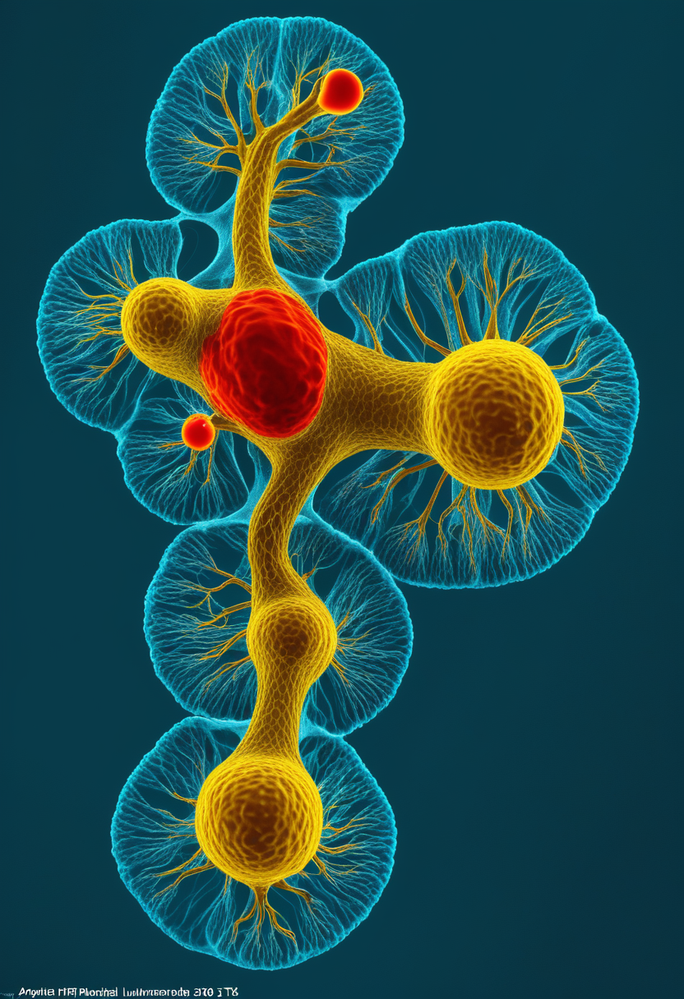
土曜日の便り。本日2026年6月27日、Cure SMA年次会議（6/24-26、オーランド）でアピテグロマブSAPPHIRE Phase 3の新解析が発表された。非歩行型SMA2/3型患者の30.4%がHFMSEで3点以上の改善を達成し（プラセボ12.5%）、9月30日のFDA承認判定日へ向けて大きな弾みとなった。同じ日にエボラDRCはフランスへの波及（欧州2カ国目）が確認され、累計1,118例・291死者でPHEIC継続中。量子ネットワークでは3ノード分散エンタングルメントの世界初実証が達成され、宇宙ではChandra+JWSTが恒星誕生サイクルを1枚に収めた。命・自由・基盤・畏敬・美 ── 人類が前進し続ける土曜日。
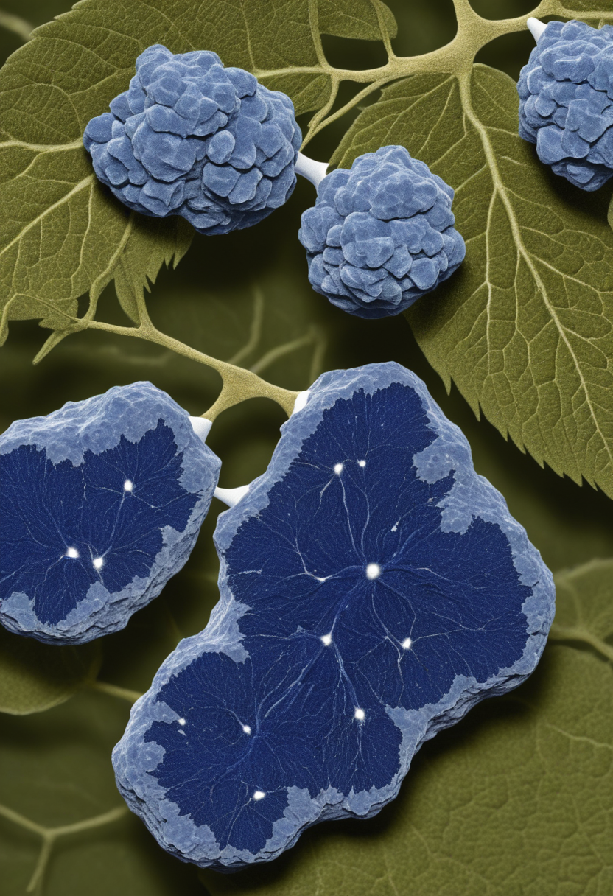
Scholar Rockは2026年6月24〜26日のCure SMA年次研究・臨床ケア会議で、アピテグロマブのSAPPHIRE Phase 3新解析を公開。52週時点でアピテグロマブ群の30.4%がHFMSE（上肢運動機能評価）で3点以上改善（プラセボ群12.5%）、4点以上でも19.6%対6.3%と有意差が大きく、早期治療開始患者で最大の恩恵が確認された。筋スタチン（myostatin）のプロ型・潜在型に選択的に結合する完全ヒト型モノクローナル抗体として、既存の「神経を守る」治療に加え「筋肉を取り戻す」初の治療薬候補。FDAはBLA再提出を受理し、承認判定のPDUFA期限は2026年9月30日。SMAコミュニティにとって2026年最大の承認判定ポイントが迫っている。
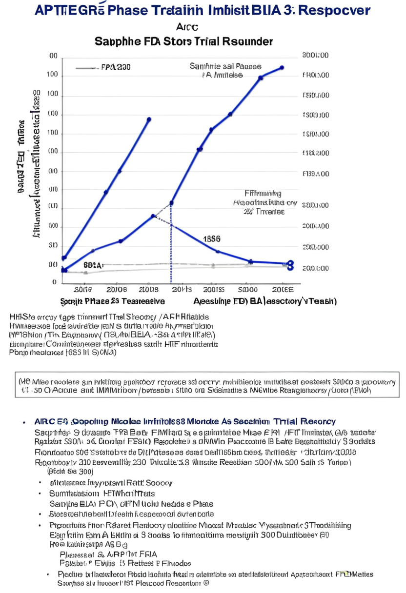
Scholar Rockが2026年Cure SMA年次会議（6/24-26）で発表したSAPPHIRE Phase 3新解析では、52週時点で30.4%がHFMSEスコア3点以上改善（プラセボ12.5%）という明確な有効性が示された。4点以上改善でも19.6%対6.3%と有意差が確認され、早期治療開始患者で恩恵が最大。アピテグロマブは筋スタチンのプロ型・潜在型に選択的結合する完全ヒト型抗体で、非歩行型SMA2/3型に対し「筋肉を取り戻す」初の候補。FDAのBLA再提出受理済み、PDUFA期限は9月30日。承認されれば年内商業化を目指す。
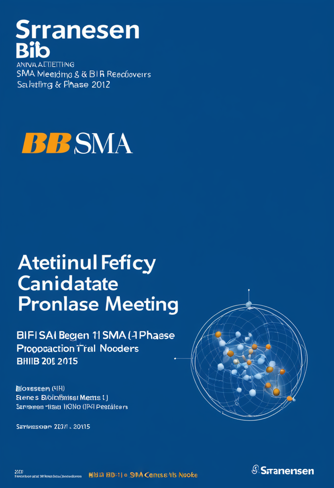
BiogenのSMA次世代候補サラネルセン（BIIB115）はCure SMA年次会議でも注目を集めた。Phase I試験継続中で初期安全性・有効性データは2026年11月発表予定。遺伝子治療後も進行する患者や既存のSMN2スプライシング修飾薬に不応答の患者を主な対象とする設計で、アピテグロマブPDUFA（9/30）とBIIB115初期データ（11月予定）が2026年後半のSMA治療選択肢を大きく動かす見通し。SMA治療パイプラインが「疾患修飾」から「機能回復」へシフトする流れを象徴する候補薬。
アピテグロマブのPDUFA 9/30は2026年SMAコミュニティ最大の判定日。「神経を守る」治療に加え「筋肉を取り戻す」初の選択肢が承認されれば、SMA治療は新たな時代へ入る。
Neuralink N1インプラントは2026年内に大量生産を開始し、ほぼ完全自動化された手術手順へ移行すると発表。最大の技術的進歩は硬膜（脳保護膜）を除去せずにスレッドが貫通できるようになった点で、手術の複雑さとリスクが大幅に低下。現在21名超のNeuronautsが参加し、ALS患者の毎分40ワード文字入力・ロボットアーム制御・カーソル操作が実証済み。商業化の最短タイムラインは2028〜2030年。
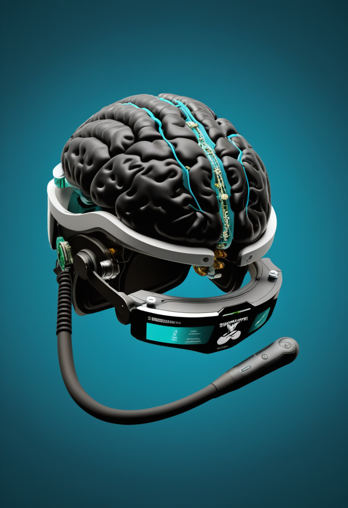
Synchronは今年内に次世代高チャンネル全脳インターフェースの詳細を発表する予定。NvidiaとはBCIのための認知基盤モデル「Chiral」を共同開発中で、完全静脈内留置型デバイスとAI基盤モデルの組み合わせが商業BCIの新軸を形成しつつある。ALS患者がApple Vision Pro・iPhone・iPadを思考のみで操作するデモも引き続き注目されており、FDA PMAピボタル試験は2026年中に本格始動。
NeuralinkのBlindsightは視覚野に直接電気刺激を与え、完全失明患者に人工光視（フォスフェン）を提供する視覚皮質刺激チップ。FDAブレークスルーデバイス指定を取得済みで、2026年内に初の人体試験開始が見込まれる。Neuralinkはさらに音声復元領域でも同じくブレークスルーデバイス指定を取得しており、BCI適応領域の多角化が急速に進む。従来の人工網膜とは根本的に異なる皮質直接刺激アプローチで、成功すれば視覚補助デバイス市場に変革をもたらす可能性がある。
BCI業界は「大量生産フェーズ」（Neuralink）と「商業認証直前フェーズ」（Synchron）で同時に転換期。失明回復・音声復元と適応拡大が加速している。
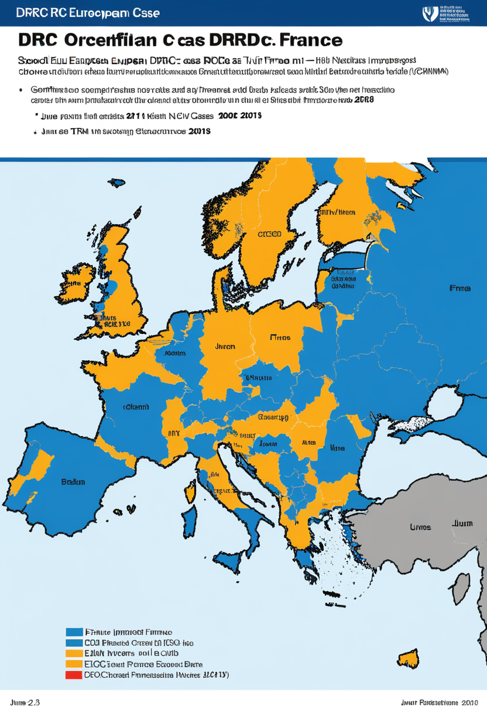
2026年6月24日、フランス保健省がDRC帰還の医師からのエボラ輸入症例を確認した。欧州では5月19日のドイツに続き2カ国目。ECDCの最新データ（6/23時点）では累計確認症例1,118例・291死者。感染集中はイトゥリ州（1,020例）・北キヴ州（95例）・南キヴ州（3例）。このブンディブギョ型発生は記録上2番目の規模で、有効なワクチン・治療薬が存在しない状況でのPHEIC継続が深刻な課題となっている。
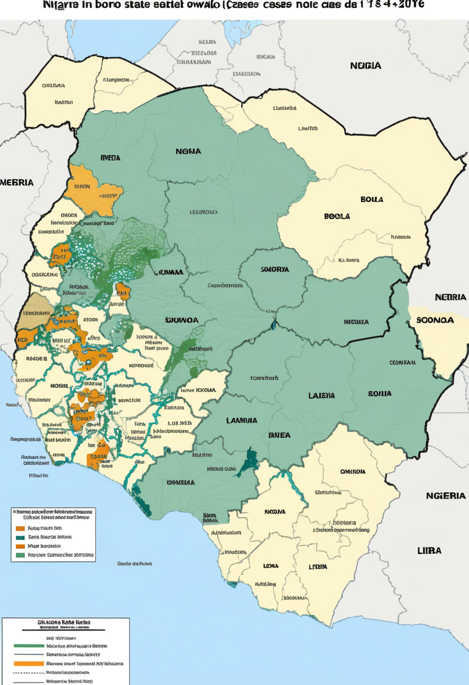
ナイジェリア北東部ボルノ州では2026年5月1日〜6月18日に13,234例・108死者のコレラが17の地方自治体で発生。太平洋のサモアでは2025年1月から続くデング熱流行が2026年6月14日時点で19,764確認例・9死者に達し収束の兆しがない。リベリアでは年初からラッサ熱が23例（うち9死者）確認されている。エボラPHEICと同時進行の複合感染危機が人道支援リソースの分散を深刻化させている。
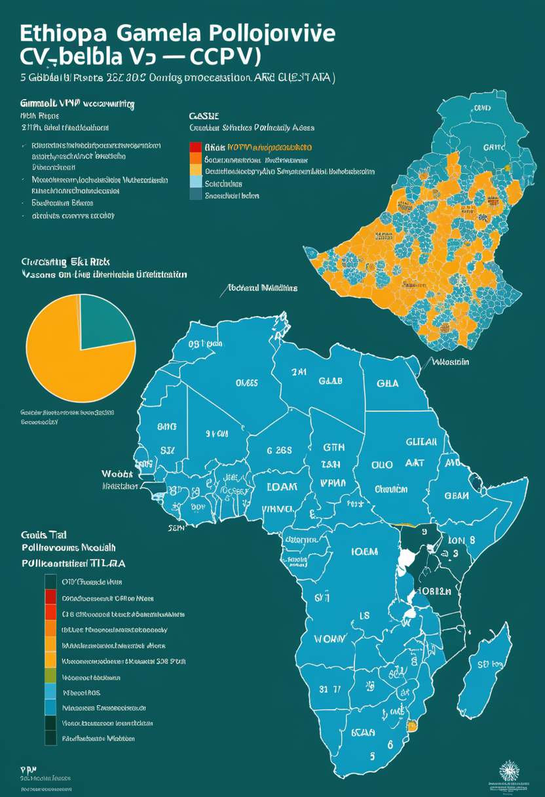
6月24日終了週のWHO報告で、エチオピア・ガンベラ州で循環型ワクチン由来ポリオウイルス1型（cVDPV1）の新規症例1例が確認された。2026年のエチオピアにおけるcVDPV1累計は5例。野生株とは異なるが、接種率が低い地域での変異リスクを示す事例として、WHOとGlobal Polio Eradication Initiativeが監視を強化している。複数の感染症が同時進行するアフリカで、ポリオ根絶への道のりが改めて問われている。
エボラのフランス波及は欧州2カ国目への転換点。ナイジェリアコレラ・サモアデング・ラッサ熱・ポリオが同時進行し、世界の公衆衛生体制への負荷は増大し続けている。
NASAのチャンドラX線観測衛星とJWSTの合同観測チームが、小マゼラン雲外縁部に位置する星団NGC 602の多波長複合画像「宇宙のリース（Cosmic Wreath）」を公開した。地球から約200,000光年。チャンドラが捉えた高温X線（若い大質量星由来）とJWSTが描いた濃密な塵雲のリング状構造が重なり合い、恒星の誕生から死までの生死サイクルが視覚化された。複数の宇宙望遠鏡を組み合わせた多波長観測の新たな地平を示す成果。
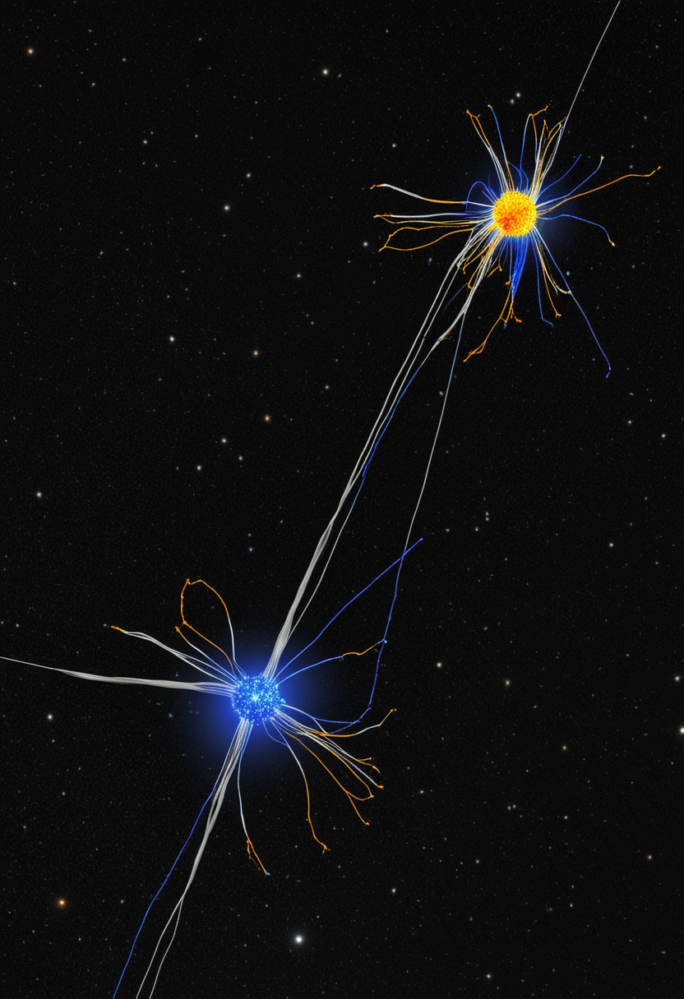
デューク大学とIonQの共同研究チームが2026年6月20日、3ノード量子ネットワーク上でGHZ（Greenberger-Horne-Zeilinger）状態の分散型トリパータイトエンタングルメントに世界初で成功。3つの空間分離モジュールが3メートルの光ファイバーで結ばれ、後選択プロトコルなしにリモートエンタングルメントを生成。GHZ忠実度84〜88%を達成し、Mermin不等式の破れも確認。モジュラー型量子コンピューティングと量子インターネット実現への重要マイルストーン。
JWSTの中赤外線機器（MIRI）が岩石系系外惑星LHS 3844 bの表面を直接分光分析し、暗く・高温で・大気のない岩石表面を確認。大気の存在をほぼ否定し、恒星放射による大気剥奪プロセスの直接観測事例としてNature Astronomyに掲載（doi:10.1038/s41550-026-02860-3）。JWSTが「大気の有無の検出」から「表面組成の直接測定」へと精度を飛躍させた画期的成果で、居住可能惑星探索の選別基準が更新され続けている。
3ノード量子エンタングルメントで量子インターネットの技術的障壁が突破され、JWSTが惑星表面の直接分析という新精度を確立した。宇宙の地図が今日も更新されている。
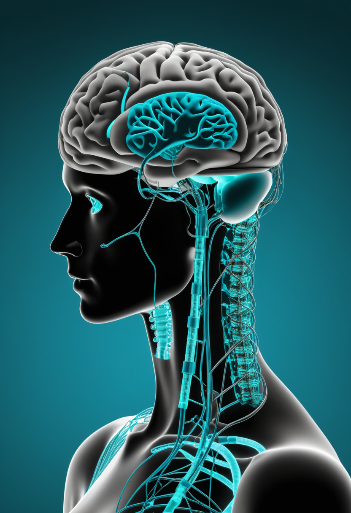
arXiv 2601.01539「Neural Digital Twins: Toward Next-Generation Brain-Computer Interfaces」が提唱する「認知のデジタル双子」は、継続的モニタリング・予測モデリング・精密介入の3機能を持つ次世代BCI基盤。神経疾患の早期診断や治療反応予測への応用が期待され、6月公開のNCBI論文（PMC12561581）もAI×バイオマーカー統合による認知デジタルツインを体系化。医療データプライバシーと倫理的枠組みの整備がない段階での臨床実装は、個人の神経情報を新たな個人情報として定義し直すことを要求する。
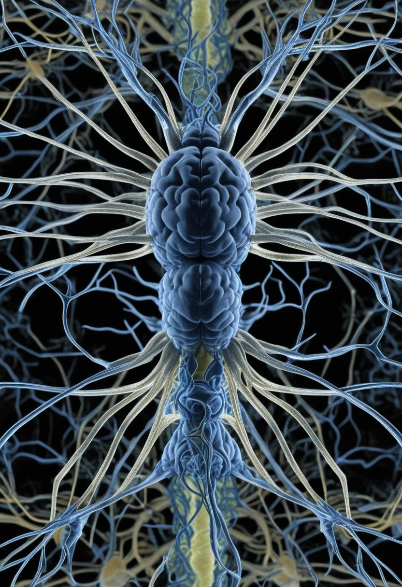
2026年3月にEon Systems PBCが達成したショウジョウバエ脳の完全デジタルアップロード（14万ニューロン・閉ループ行動再現）はWBE研究の転換点とされる。しかし専門家の長期予測では完全な人間意識転送の実現まで30〜40年先というコンセンサスが維持されている。「デジタルコピーは連続した自己ではなく独立した新存在」というsubstrate identity problemが哲学的主流で、「認知主権（Cognitive Sovereignty）」の法的・倫理的枠組みの国際整備が急務とされている。
arXiv 2601.01321「Digital Twin AI: Opportunities and Challenges from Large Language Models to World Models」は、LLMを超えた世界モデル型デジタルツインへの進化を論じる。物理・認知・社会現実をリアルタイムで反映するシミュレーション環境として、医療個人化治療計画・都市インフラ最適化・認知拡張デバイスとの統合が主な応用分野。国際標準化の不在が普及の最大障壁で、EU AI法や各国規制動向が今後の展開を左右する。
ニューラルデジタルツインがBCIの基盤インフラとして定義され、ショウジョウバエ脳アップロードの転換点から意識転送の現実点検まで、人類の「次の自己」を問い続ける議論が深化している。
本日2026年6月27日、土曜日。Cure SMA年次会議でアピテグロマブが「筋肉を取り戻す」候補としての証拠を積み重ね、9月30日の承認判定日へ向けて弾みを得た。エボラDRCはフランスへの波及で欧州2カ国目の感染国を記録し、PHEIC継続の重みが増した。量子ネットワークでは3ノードGHZ状態実証という技術的障壁の突破があり、JWSTは岩石惑星の表面を直接分析するという新精度を確立した。脳のデジタルツインが次世代BCIの基盤として定義される一方で、意識の完全な複製は依然30〜40年先という現実点検が並走している。命と宇宙と人類の問いが交差する、今日もまた。
筋肉を取り戻す日が、もう少し近くなった。おはようございます。